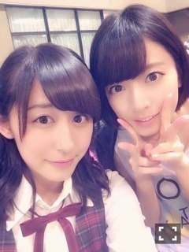
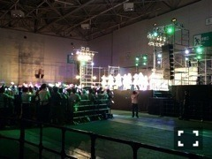
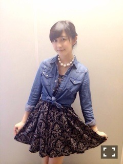
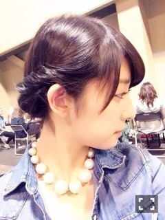

| 2014/05 18 Sun | 斎藤ちはる 最高の2日間(´>∀<｀ )ゝ |
ちはるーむへようこそ☻
この2日間、最高でした(｡-_-｡)
まずは土曜日の全国握手会！
ななみんとペア(｡-_-｡)♡

大人な考え方とか性格とか憧れ。。♡
ななみんみたいな大人になれたら
絶対かっこいいだろうなって思う！！
来てくれる方もみんな優しくて、
すごく楽しかったです！
本当にありがとございました(o^^o)
そして握手会後には、アンダーライブ千秋楽！！！
楽天ライブに始まり、渋谷での3公演、そして今回の名古屋のライブと、
ライブ尽くしの最高の期間が終わってしまった(´;_; `)
それくらい、今回のライブが本当に楽しかった！！！

土曜日の名古屋でもまたユニット曲をやらせていただいて、
私は「せっかちなかたつむり」を歌わせていただきました。
さゆりんポジ、なんとセンターで！！
あみだくじで決まったとしても、
なんか運持ってたのかな(｡-_-｡)笑
ライブでも言わせてもいましたが！
すごく気持ちがよかったです！！！！
そして楽しかったです！！！！
アンダーライブに来てくださった皆さんから
すごく楽しかったという声が聞けて良かったです(´;_; `)♡
本当にみなさんありがとうございました！！！
そして9thのメンバーで、またアンダーライブを開催します！
すごくすごくすごーく嬉しいです♡
是非是非来てね(｡-_-｡)！
ゆーり♡
MC、らりんと一緒にありがとね♡
そして日曜日！
個別握手会でした！！

ワンピースに、デニムシャツに、パールネックレス！！
髪の毛は上げて、すっきりまとめたよ♪

横からみたらこんな感じ♡
今日も、来てくださった皆さん、本当にありがとう(｡-_-｡)
なんか、ちはるーむめいとさんの優しさに改めて触れたよヽ(；；)丿
あたたかい皆さんに囲まれて、私は幸せですヽ(；；)丿
ちはるーむめいと最高ヽ(；；)丿♡
いつも支えてくれてありがとう。
長くなっちゃったけど、これが私の最高の2日間です(｡-_-｡)♡
読んでくれてありがとう！！
そして前回のブログにも、コメントたくさんありがとう！！
みなさんがいてくれて、よかった。
ばいるんっ
るんるんっ
ちはるんっ
(´>∀<｀)ゝ